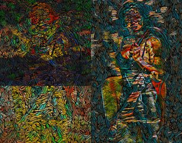

← Async Art — living works · all collections
by Athena Novo · Async Art Master #3160 · day/night · time rule: UTC
Updates twice a day to reflect day / night cycles.

Day 06:00–18:59 · Night 19:00–05:59 (UTC)
Part of the "If I" series.. If I were Invisible by Athena Novo on Async Art This artwork consists of couple of underlying artworks that automatically change depending on the time of the day. Visit at Async Art's website to experiment with it. View with Async Art's app to experience it yourself.
The viewer shows these states from display copies kept with this site (display copies, resized; the originals are on IPFS: the files below). The full-size files are on IPFS; the ones we pin are pinned at Pinata. Each file is stored on IPFS under its CID. The CID belongs to the file, not to any website, so other IPFS gateways can open it too. Three that served our files on 2026-09-28: gateway.pinata.cloud, ipfs.filebase.io, c-ipfs-gw.nmkr.io. Each file below is linked on all three, in the order to try them. Every line says what our own check found: we keep this file pinned: 3; our own copy, pinned by us and verified on upload: 1.
Qmd7NyKtLpYuWQkywRcbVbwoHupQMDQ823JXb2pQTm481w gateway.pinata.cloud · ipfs.filebase.io · c-ipfs-gw.nmkr.io — we keep this file pinned, checked 2026-09-26 17:46QmXCjVan1AKzbtQRa574upfD8guduaZrakR3F13kdcndMo gateway.pinata.cloud · ipfs.filebase.io · c-ipfs-gw.nmkr.io — we keep this file pinned, checked 2026-09-26 17:46bafybeifmoj2wghsk2bcslvjbnvzgnkt5myxod2zsucvc46qrx3kuggfbh4 gateway.pinata.cloud · ipfs.filebase.io · c-ipfs-gw.nmkr.io — our own copy, pinned by us and verified on upload, checked 2026-09-22QmaJ4tfzDmjC85Vq5f2YkpbiGAnZZRTm1qvWsPNYhdVXLM gateway.pinata.cloud · ipfs.filebase.io · c-ipfs-gw.nmkr.io — we keep this file pinned, checked 2026-09-26 17:46Qmd7NyKtLpYuWQkywRcbVbwoHupQMDQ823JXb2pQTm481w gateway.pinata.cloud · ipfs.filebase.io · c-ipfs-gw.nmkr.io — we keep this file pinned, checked 2026-09-26 17:46Qmd7NyKtLpYuWQkywRcbVbwoHupQMDQ823JXb2pQTm481w gateway.pinata.cloud · ipfs.filebase.io · c-ipfs-gw.nmkr.io — we keep this file pinned, checked 2026-09-26 17:46QmXCjVan1AKzbtQRa574upfD8guduaZrakR3F13kdcndMo gateway.pinata.cloud · ipfs.filebase.io · c-ipfs-gw.nmkr.io — we keep this file pinned, checked 2026-09-26 17:46async.art · OpenSea · Etherscan
Generated archive pages. Content identifiers point to the public IPFS network.